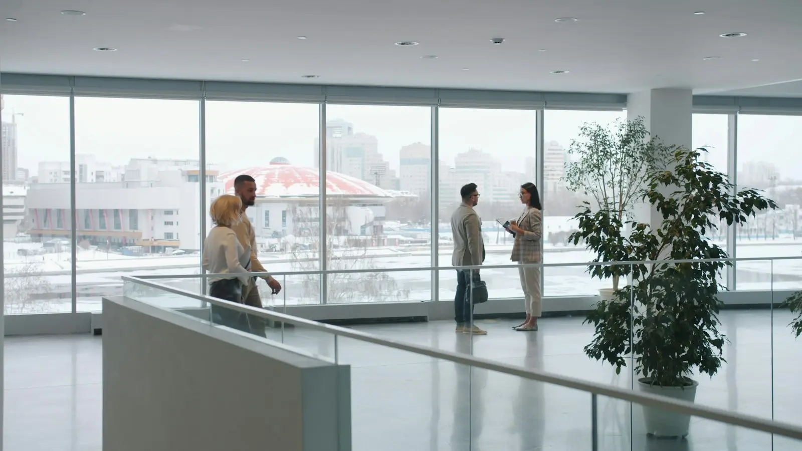

Ethics and confidentiality
Compliance with the Brazilian Bar's Statute and Code of Ethics, with professional secrecy at every stage.
Rua de Exemplo, 100, 14th floor · São Paulo, Brazil (example)
(11) 3045-0000 · Mon to Fri, 8 am to 7 pm
Full-service corporate law, with teams that combine areas of law to serve companies and business groups.

History
The firm was founded in 1994 by Ricardo Bastos and Helena Lacerda, initially focused on tax and labor law for industrial companies. Over the years, clients' needs led to the creation of the contracts, corporate, litigation, intellectual property, real estate, data protection and compliance practices.
Today the firm has 25 lawyers, organized in nine practice areas and in sector groups that follow the regulation and dynamics of eight sectors of the economy.
How we work
When a matter reaches the firm, the partner in charge identifies the areas involved and builds the team. Recommendations take tax, labor, contractual and corporate effects into account at the same time.
Values
Commitments shared by all partners, lawyers and support teams.
Compliance with the Brazilian Bar's Statute and Code of Ethics, with professional secrecy at every stage.
Study of legislation, case law and sector regulation before every recommendation.
Risks, alternatives and the limits of each path explained directly.
Recommendations proportionate to each company's risk and moment.

Structure and confidentiality
Our office is at Rua de Exemplo, 100, 14th floor (example address). We work in Portuguese, English and Spanish, which helps when dealing with foreign shareholders and investors.
Professional secrecy and the Brazilian Bar's advertising rules shape our communication: this website describes practice areas, sectors and topics without naming clients, transactions or results.
Briefly describe the context. A member of our team will get back to you.